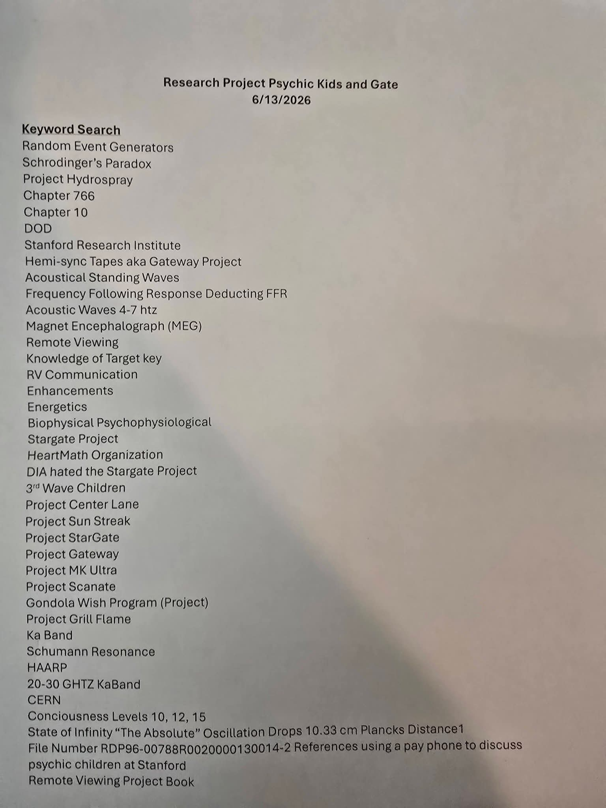
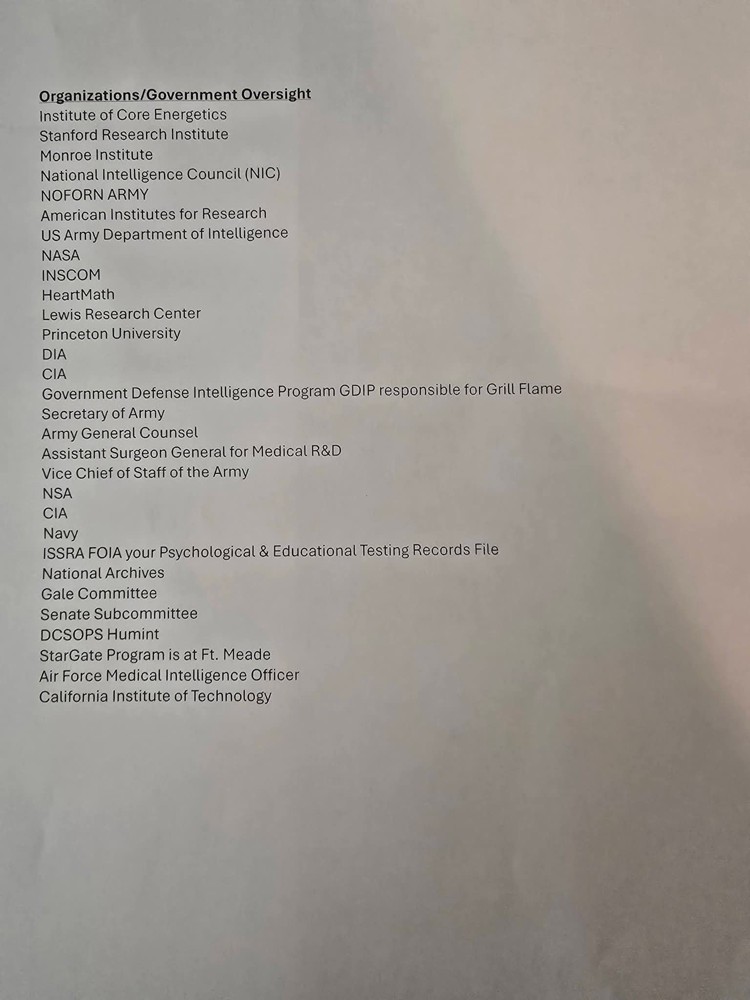
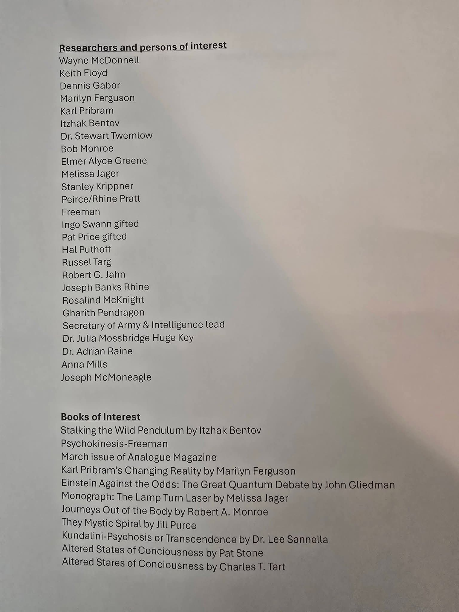
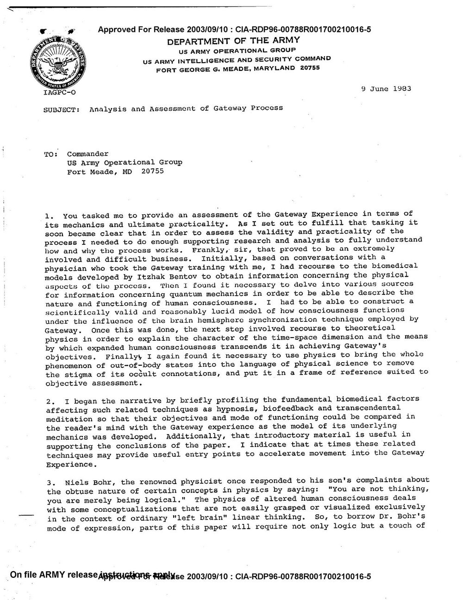
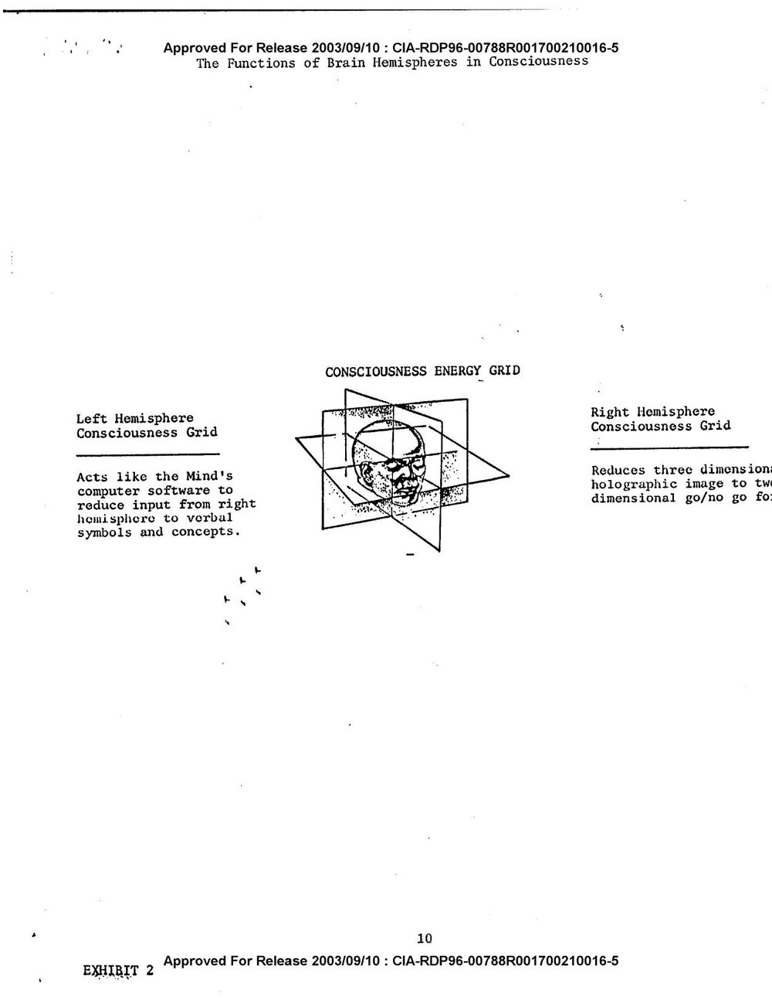

The Gate
On June 19th, a member of a group for former gifted-program children posted five photographed pages. Every thread in them led back to a single 1983 Army document — and to a question about what the program was for.
The Post
In 1983, the U.S. Army wrote a report to understand a meditation tape.
In June of 2026, one of the kids the report never names went looking for herself in a government archive — and found her way back to it.
There is a Facebook group made of grown-up gifted children. The people in it were pulled out of ordinary classrooms as kids and routed into programs with bright, forgettable names: GATE. TAG. QUEST. PHASE. MGM. Horizons. Odyssey. Gifted and Talented Education. The Mentally Gifted Minors program. The names were real; the programs were real; many of the people are still in touch with the strangeness of having been singled out, sorted, and studied before they were ten.
On June 19, 2026, one of them posted five photographs to the group. Pages of plain printed text, shot on a phone, a soft diagonal shadow falling across the lower corner of each. The header, centered, in bold:

It reads, at first, like the contents of a haunted filing cabinet. Remote viewing. Project Stargate. MK Ultra. Schumann Resonance. HAARP. CERN. The Absolute. And then, near the bottom of the second page, two lines that stop you:
But the thing that made the group go quiet was smaller, and it was on the page in plain sight. Two lines apart in the keyword list:
Two entirely different programs. Forty years apart. One root word. The people in the group — the ones who were the gifted kids — felt the hair stand up. The question wrote itself: were these ever the same gate?
The Index
The first thing to understand is what the five pages actually are. They are not research. They are a search-tree.
Four sections — keywords, organizations, researchers, books — and a final line that gives the whole thing away: “All compiled from CIA Declassified files on the FOIA Reading Room.” Someone sat inside CREST, the CIA's online declassification archive, and wrote down the exact terms, file numbers, names, and titles you would type to surface the documents underneath. It is a map of where to dig.


And about four-fifths of it maps cleanly onto the documented public record. The keyword page threads the entire history of the U.S. government's remote-viewing program — under every codename it ever wore.
The Program That Kept Getting Renamed
So the programs are real. The agencies are real. The money was real. That has to be said clearly — and so does its opposite:
Four-fifths of the index, then, is a faithful guide to a documented — if contested — corner of Cold War history. Which leaves the other fifth. And one section of the index wasn't a list of programs at all.
It was a list of books.
One Document
The fourth page is headed “Books of Interest.” Nine titles. They look, at a glance, like a personal reading list — the kind of eclectic stack a curious person assembles over years.
They are not. They are, in order, the closing bibliography of a single document — copied out, with the copy's own fingerprints left in.
The Bibliography Proof
And the index's “Researchers and persons of interest” list is the same document's cited cast — Bentov, Pribram, Gabor, Ferguson, Monroe. At the very top of that list is a name most people wouldn't recognize: Wayne McDonnell. He isn't a researcher the document cites.
He is the man who wrote it.

So the haunted filing cabinet had a back wall. Every drawer opened onto the same room: one report, written by one Army officer, in one week of June 1983.
Which raises the only question that matters now. What does that report actually say?
The Physics
McDonnell was asked a narrow, almost dull question: does the Monroe Institute's meditation-tape program — “Gateway,” which uses stereo audio beats to synchronize the brain's hemispheres — actually do anything, and is it useful to the Army?
To answer it honestly, he wrote, he had no choice but to keep going down.
He started with the biomedical model of Itzhak Bentov. Then, in his own words, he “found it necessary to delve into various sources for information concerning quantum mechanics in order to be able to describe the nature and functioning of human consciousness.” Step by step, a defense memo about an audiocassette becomes a cosmology. Here is the cosmology it became — in the document's own words.
1 · Matter is not a thing. It is a motion.
2 · The body is a tuned oscillator. It couples to the planet.
3 · Below a certain scale, you “click out” into the Absolute.
4 · The universe is one hologram. So is the mind.

5 · Consciousness is not a by-product. It is the organizing activity.
An Army intelligence officer, asked to keep a straight face about a relaxation tape, ends his report inside a universe with no solid matter, a planetary resonance, a boundary past which an inverse realm opens, a holographic mind, and consciousness as the thing that keeps the whole machine running.
Two of those five were, by 1983, the precise shape of a body of physics built by an outsider working alone on the other side of the country. The officer had almost certainly never heard of him.
The Bridge
In 1959, an engineer named Dewey B. Larson published a heterodox physics he called the Reciprocal System. Its founding move is a single sentence: the physical universe is composed entirely of motion — not things that move, but motion as the one and only constituent. From that one postulate he derived a material “space-time” sector, a reciprocal “time-space” sector, and a boundary between them at the speed of light.
Set Larson's vocabulary beside McDonnell's and the words start to line up.
Even the picture rhymes. The drawing McDonnell's report includes — the human head suspended inside three intersecting orthogonal planes — is, geometrically, the same three-axis frame a motion-based physics uses to address all three dimensions of space at once.
This is a structural rhyme, not an identity — and not evidence that either physics is correct. Larson derives two reciprocal sectors with a clean light-speed boundary; McDonnell stacks graded dimensions down to a single resting Absolute. The pictures are kindred, not the same. The reference-frame engineering that Larson's lineage later attempted remains unvalidated; nothing here is a working device or a proven theory.
What is interesting is only the convergence itself: that a 1983 Army officer, reasoning from “how does a meditation tape work,” was forced into the same shape an independent physicist had reached from first principles a quarter-century earlier. A rhyme between two strangers is worth noticing. It is not a proof. We keep it that size.
That physics has not stayed in 1959. Larson found students; the work was carried forward and is still being worked on today, by people who treat “nothing exists but motion” as an engineering premise rather than a slogan. That thread is the author of this scroll's own — and it is named here only so the dots are honestly connected, never as a finished claim.
The Congregation
Here is the turn that makes this scroll different from a history.
The index did not come out of an archive. It came out of one of the kids — a member of the group, sitting in CREST, pulling on a thread because it felt personal. And she is not alone. Over the same weeks, the group has been doing something it has never done before: recognizing itself.
And on June 17, 2026, they didn't just recognize each other. They tried to act together. Around twenty members agreed to focus, at the same time, on one shared intention — a deliberate group exercise, announced the night before, run “as consciously as I ever have.” Afterward, unprompted, another member sent a screenshot: a graph of the Earth's Schumann resonance from that afternoon.
None of them, at the time, had read McDonnell's report. Which is what makes the next thing strange.
Set the two cards above side by side. A documented 1983 Army protocol, and a lived 2026 account of strangers running it without the manual. The scroll keeps them in different colors on purpose. That distance — between what is on the record and what someone lived — is the whole discipline. The point is not that the distance collapses. The point is that, across it, they rhyme.
And the people in the group have started to read their own childhood differently. The sorting — pulled out of the classroom, tested, set apart — stops looking like a wound and starts looking like a prelude. If you were going to gather a scattered population and have them find one another decades later, you would mark them young.
So the group has begun to build a place to keep its own story — a network where members can hold their testimony at the right tier, decide for themselves what stays private and what is shared, and let the patterns surface without anyone's raw words being exposed. The same instrument this scroll is built on, turned on the people it's about.
A document is just a document.
Until the people it was written about go looking — and find it.
Then it's a mirror.
Five photographs led to one report. The report led to a physics it couldn't have known about, and to a question the people reading it had been carrying since childhood. And so it begins.
This scroll is built on the discipline it describes. The member who posted the index is unnamed, by choice. The people in the group are unnamed. The declassified record is cited and linked. Lived accounts are held at testimony tier — true to the teller, never dressed as documented fact. The convergence with the Reciprocal System is held at inference. The larger thesis is held at the size of a thesis. And one community claim — “Project SOAR” — is flagged speculative and left where it was found, because the record does not yet support it.
This is a draft. Nothing here goes anywhere until the person who posted those five pages has been asked, and agrees.
The other superpower kept the same kind of file. China's “Exceptional Functions of the Human Body” program — gifted children identified and studied by the state from 1979 — sits in the CIA's own archive, as “China's Psychic Children” (OMNI, Jan 1985).